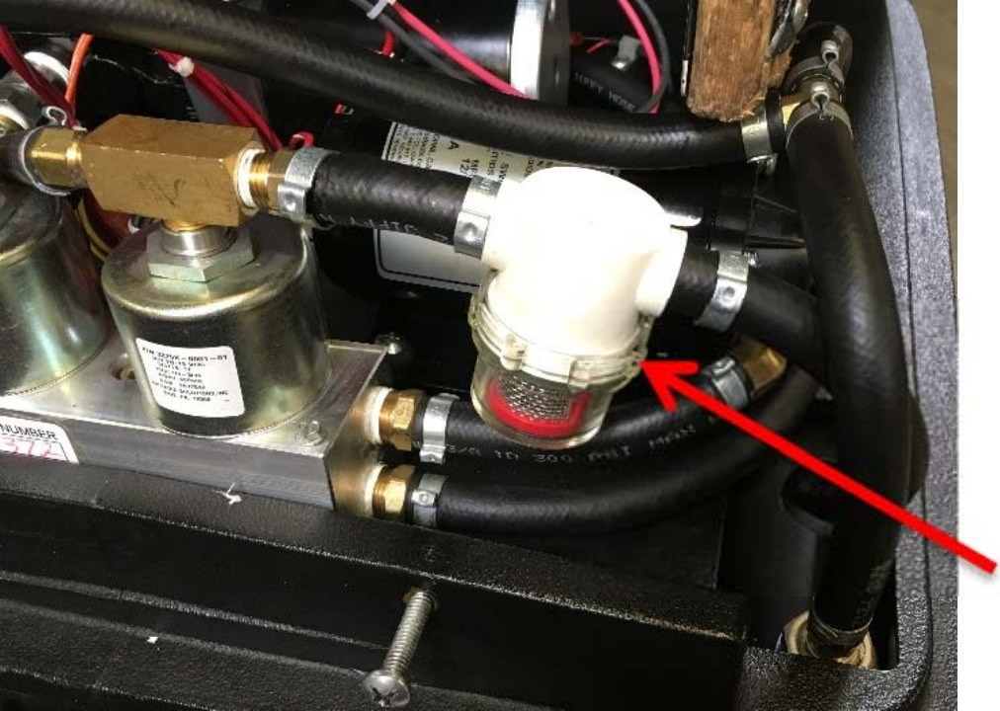
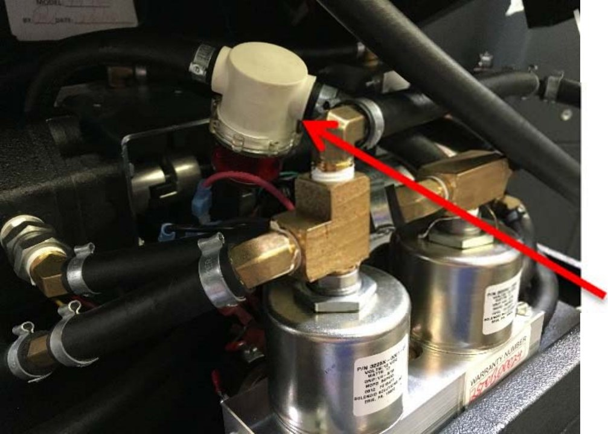
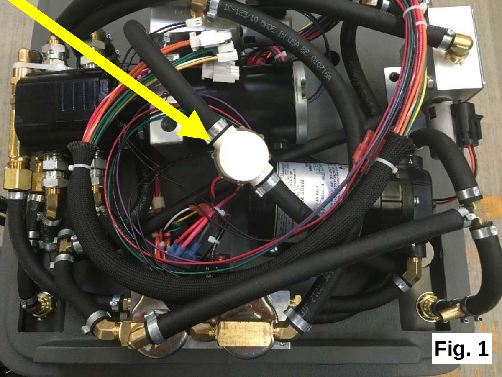
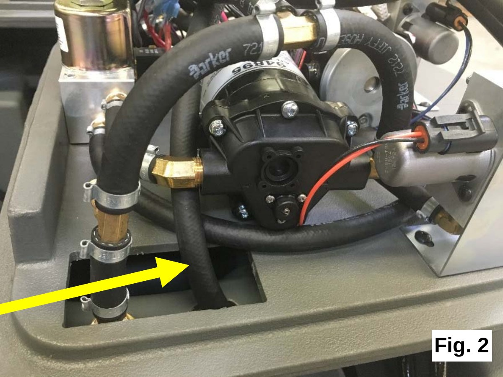
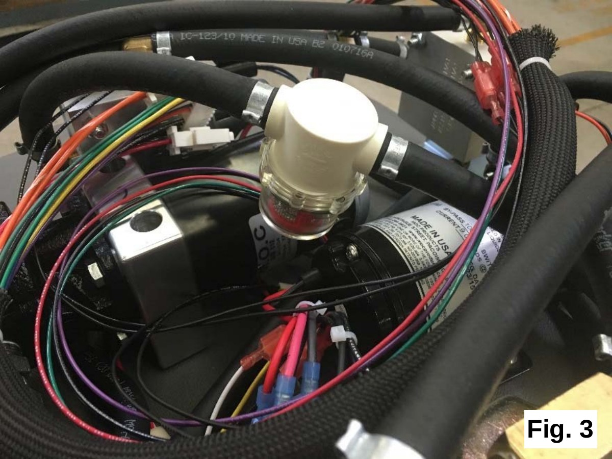
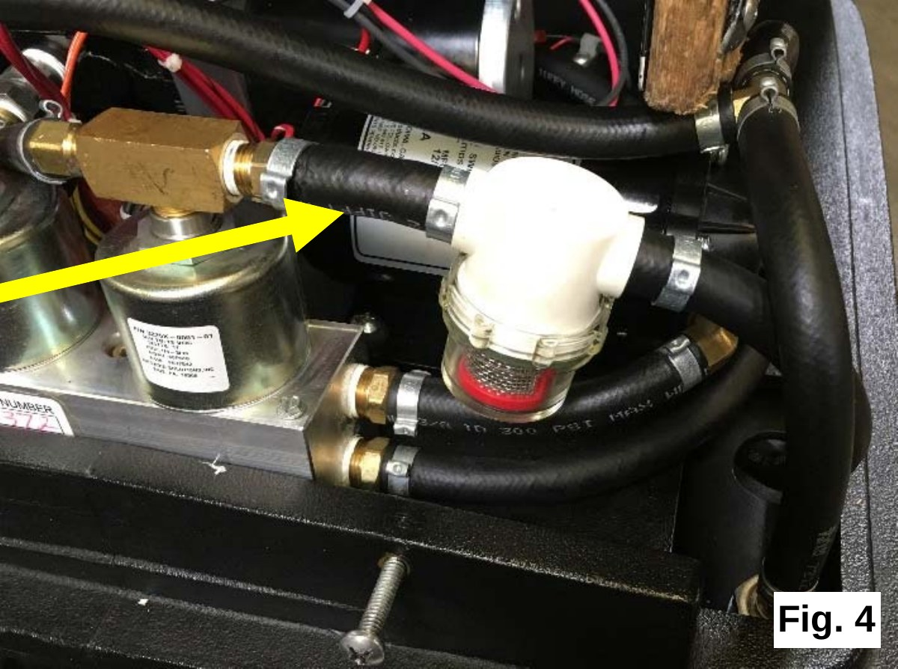
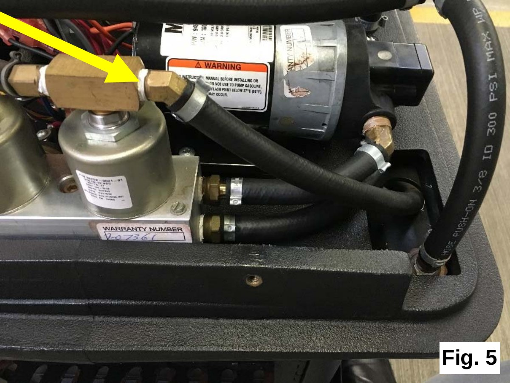
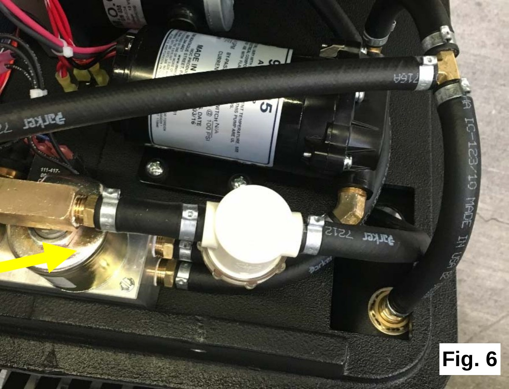

Doc no. MOC-TSB-16-14 // Vol. 16 No. 14 // Sep 13, 2016 // Transmission
Fluid Line Filter on ATF Machines
The MOC Machine and Equipment Department is replacing all filter screens on the New Tank Manifolds found on ATF machines with an inline filter (Part No. 94921), which will be installed on the new fluid line inside the machine before the first valve and pumps. The inline filter can catch more debris prior to clogging and is easier to clean.
What's new
The old filter screen inside the manifold is discontinued and replaced by this inline filter. Photos are for reference.
Smart Tech II: the filter goes on the New Fluid hose inside the machine, between the diverter valve and the New Fluid tank (Fig. 1). Locate the hose coming up through the chassis from the New Fluid tank (Fig. 2), measure about 10in from the chassis surface and cut the hose. Install the filter between the cut ends with a pinch clamp (94098) on each side (Fig. 3). The arrow stamped on the filter must point toward the diverter valve.
Standard ATF machine: the filter goes on the New Fluid hose inside the machine, between the 3-way valve and the New Fluid tank (Fig. 4). Remove the hose and the 45° hose barb from the tee fitting on the 3-way valve (Fig. 5) and replace the barb with a straight barb fitting (94071). Cut 2in off the end of the black hose and reattach it to the barb, then install the filter between the 2in piece and the hose (Fig. 6). The arrow stamped on the filter must point toward the 3-way valve.
Contact
For more information, contact the Machine & Equipment Department at 866.244.6621.








Part numbers
| Part No. | Description | Notes |
|---|---|---|
| 94921 | Inline filter | |
| 94098 | Pinch clamp | Smart Tech II |
| 94071 | Straight barb fitting | Standard ATF machine |